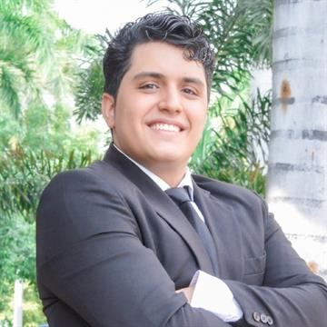
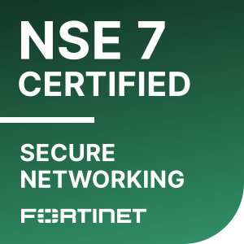
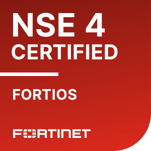
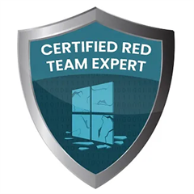
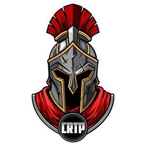
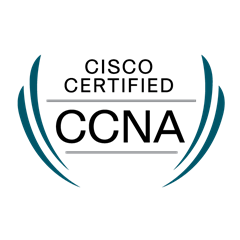
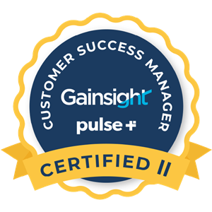

I debug the packet capture and keep the account renewing.

- Technical line
- Customer line
- Certification line • lab and exam
Select a station to read the proof at that stop.
Service record
Every figure here is the exact number from my own record, with where it happened.
| Result | Where | Line | Service |
|---|
What runs on each line
Technical line
Customer line
Case files
What the numbers looked like up close. Each case is a pattern I met often, and how I handled it.
Support desk • Fortinet
2,000+ cases closed • CSAT above 4.7 • 300+ positive reviews
Also on the desk
Named enterprise accounts • Netskope
Roughly 60 named accounts • about 60% moved from red to green
Certification line
Earned in lab and exam environments. Each offensive certification ended in a full written penetration-test report.

NSE 7
NSE 4
CRTE
CRTP
CCNA
CSM ADV.
Fortinet
- NSE 7 – Network Security Architect
- NSE 4 – Network Security Professional
- Certified Solution Specialist – Secure Access Service Edge
- SD-WAN 7.0 Architect
- FortiSOAR Administrator
- FortiEDR 5.0 Administrator
- FortiSIEM 6.3 Administrator
- AWS Cloud Security 7.0 Administrator
- Azure Cloud Security 7.0 Administrator
Offensive security
- OffSec Certified Professional (OSCP)
- Certified Red Team Expert (CRTE)
- Certified Red Team Professional (CRTP)
Networking
- Cisco Certified Network Associate (CCNA)
Customer success
- Customer Success Manager ADVANCED Certified Professional – Gainsight
Education
- Engineer's Degree, Electronics Engineering – Universidad del Magdalena2017 – 2023
This is the short version.
The full detail adds every support and CSM case, the training logbook, the red team skills and the technologies behind them, the tools I built, and the languages I work in.
Training logbook
The lab hours behind the certification line, Aug 2023 to May 2024. Names and counts only: exam and Pro Lab content stays private, as the platforms require.
| When | Work | Scale |
|---|
Red team skills
What I had to know to work through the labs and the three exams. All of it learned and proven in lab and exam environments, and written up in full reports.
Hands-on
What I actually work with, and the techniques I practised across 170+ machines until they became routine.
Figured out in the lab
I don't claim expertise in these. Every practice machine ran something different, so each time I sat down with the documentation and the code until I understood how it worked, well enough to find where it failed. What carries over is that method, not mastery of each product.
Workshop depot
At Netskope, about a third of my working time went into building the tools the role ran on. They are personal tools with no public repository; I can walk you through them on a screen-share.
Service announcements
ENThis service runs in English, Spanish and Portuguese, across NAM, LATAM and Brazil.
ESEste servicio opera en inglés, español y portugués, en NAM, LATAM y Brasil.
PTEste serviço opera em inglês, espanhol e português, em NAM, LATAM e Brasil.